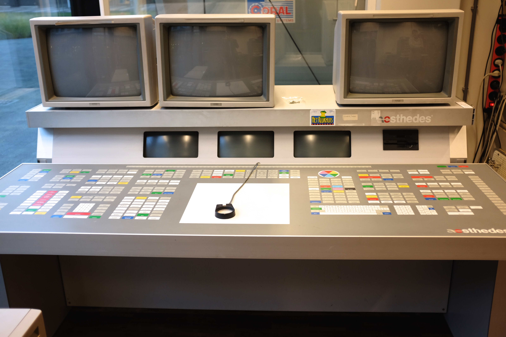
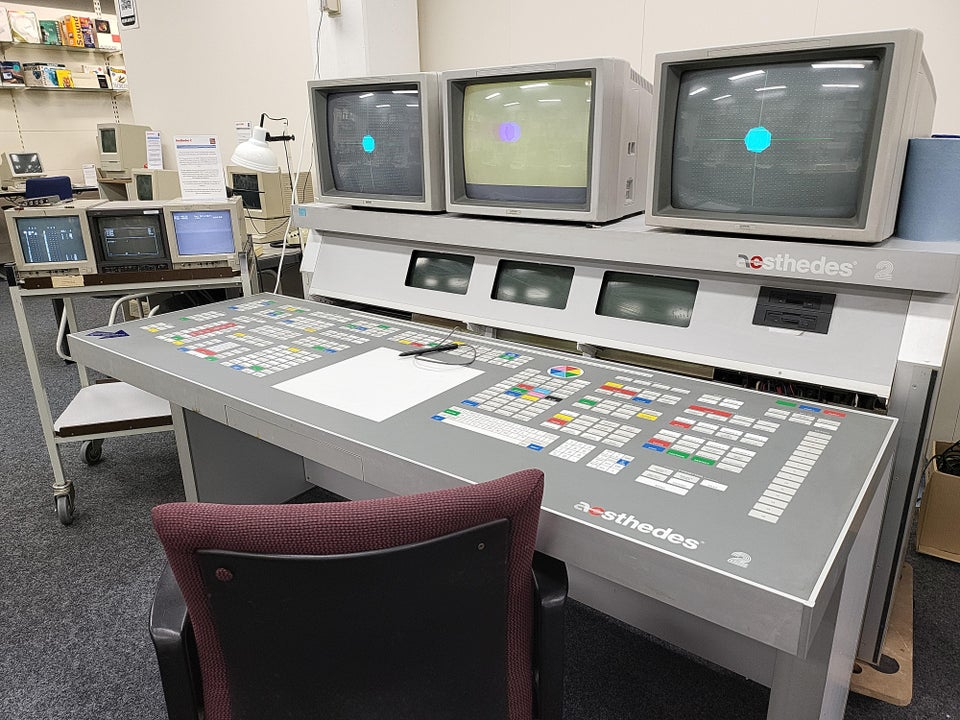
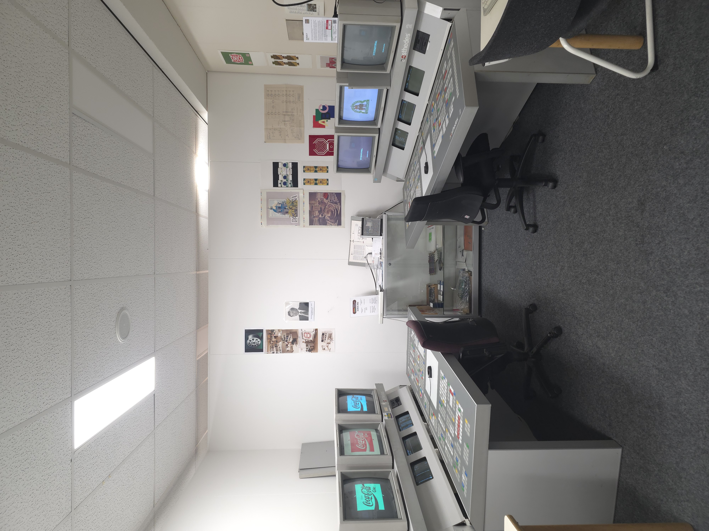
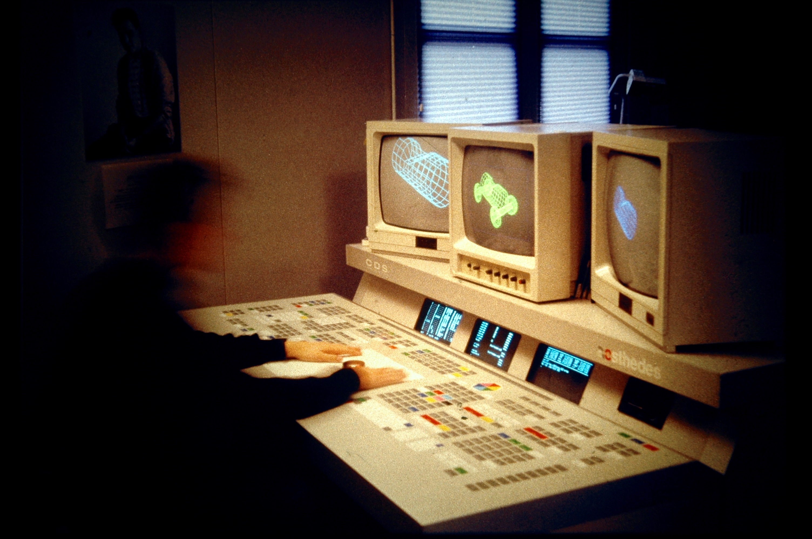

Aesthedes
The 220 kg Dutch design workstation with 636 dedicated membrane keys, six screens, and a philosophy that designers should never need to learn computers.

Overview
The Aesthedes was a dedicated graphic-design workstation developed by Dutch industrial designer Dominique Claessens and his company Claessens Product Consultants, commercially launched in 1985. Its core design philosophy was radical: every function should have its own physical key, and every view its own physical screen. No overlapping windows, no nested menus, no modifier-key combinations — just direct physical access to every command. The Aesthedes 1 packed approximately 583 membrane-switch keys into the desk surface, organized into functional 'islands' (layer selection, colour wheel, geometric operations, text entry, etc.). Three 20-inch Barco RGB monitors displayed the composite view, zoom view, and working-layer view simultaneously; three 12-inch monochrome data screens showed project data, colour values, and command history. Under the desk: ten Motorola 68000 microprocessors, 1.9 MB RAM, 2.4 MB graphics memory, and a 20 MB hard disk running Microware OS-9. The entire system weighed 220 kg and cost approximately 300,000 Dutch guilders (roughly $150,000 USD in mid-1980s money) — the price of 30 middle-class cars.
Between 200 and 250 units were produced. Customers included the Dutch State Printing Office (for banknotes and security documents), Total Design in Amsterdam (three units), Marks & Spencer, Volvo, Mercedes, Volkswagen, Ford UK, and Heineken. The Aesthedes was used to design the Dutch 25-guilder 'Robin' banknote (1989), Dutch traffic signs, and countless consumer packaging designs. The Aesthedes 2 (1989) upgraded to dual Motorola 68020 processors, added CMYK support, a pull-out QWERTY keyboard tray (bringing the total to ~636 keys), and optional Macintosh connectivity — the very machine that would render it obsolete.
Total Design, the legendary Dutch design agency led by Wim Crouwel, acquired three Aesthedes computers and nearly went bankrupt from the investment. In 1990, they put all three machines on the street for bulky-waste collection. Claessens sold Aesthedes NV to Belgian monitor manufacturer Barco Graphics in November 1989; production ceased shortly after. Today only about seven units are known to survive, with two fully operational at the HomeComputerMuseum in Helmond, Netherlands, restored through years of painstaking volunteer work after being rescued from an Amsterdam university basement.
Deep dive
Dominique Claessens' foundational belief was that a designer should 'be able to start immediately, without knowledge of computers.' The insight was that switching between 'creative brain' (visual thinking, spatial reasoning) and 'cognitive brain' (remembering keyboard shortcuts, navigating menus) broke the design flow. His solution was extreme: a dedicated physical key for every single function. No Ctrl, Alt, or Cmd keys — those were 'modifiers,' his were 'keepers.' The Aesthedes 1 membrane desk had roughly 583 keys; the Aesthedes 2 added a hidden pull-out QWERTY tray for text entry, bringing the total to approximately 636 keys — likely the most keys ever on a production computer. The keys were organized into coloured islands: 64 layer-select keys, a colour-wheel island, boolean operation keys, move/mirror/rotate blocks, and named-function sections. Each island had its own red ENTER key. The training manual included printed mini-maps showing where each key was located on the desk, because finding the right key among 636 was itself a non-trivial task. The keyboard was the GUI — what you saw printed on the membrane was what you got, with no abstraction between physical input and software function.
Rather than stacking information in overlapping windows (a concept that barely existed yet), the Aesthedes gave every information view its own physical monitor. The three 20-inch Barco RGB colour monitors showed: (left) a zoom view of the current layer at up to 100× magnification; (center) the composite view with all 64 layers stacked; (right) the working layer in monochrome cyan. Three 12-inch monochrome data screens below displayed project parameters, RGB values per layer, and the last 10 commands executed. All six screens updated simultaneously — no window to bring to front, no tab to click. The canvas itself was enormous: 64,000 × 64,000 coordinate units with 64 layers. Units could be defined so that a map of the Netherlands appeared at actual life scale, with distance measurements in kilometers. Each layer held one colour; higher-numbered layers visually covered lower ones. The system was purely vector-based, with B-spline curves for smooth shapes, and output through plotters or a raster image processor (the APD, a separate Aesthedes-styled peripheral) for colour-separated film.
Despite Claessens' vision of an immediately accessible machine, the Aesthedes was so complex that most agencies hired dedicated operators — trained specialists who sat between the designer and the machine. At Total Design, the workflow reversed entirely: the designer had to complete the entire conceptual process beforehand, clearly describing every detail to the operator, who then executed it. As designer Robert van Rixtel recalled, 'You had to have completed the conceptual process before you started. That's totally the opposite nowadays because you can usually sketch directly on the computer.' Frustrated by the communication gap, van Rixtel once grabbed a transparency sheet, taped it to the computer screen, and penciled his design directly on it. 'It worked.' The Aesthedes also had a notorious UNDO key — physically present on the keyboard, but the function was never implemented. Pressing it did nothing. Designers learned to save to floppy disk before every risky operation.
The Aesthedes played a key role in designing the Dutch 25-guilder 'Robin' ('Roodborstje') banknote, introduced in 1989 and designed by Jaap Drupsteen. Drupsteen used three computer systems sequentially: the Quantel Paintbox for the first sketch, the Aesthedes to refine the intricate anti-counterfeiting linework (its enormous vector precision was ideal for guilloche patterns), and a Tekari drafting computer for fine details. The Dutch State Printing Office (Sdu), which leased its Aesthedes to the central bank for the project, used the machine specifically for designing 'moeilijk na te maken documenten' — hard-to-forge documents including giro cheques, state lottery tickets, and all Dutch traffic signs. Drupsteen went on to use the same workflow for subsequent notes: the 100-guilder 'Little Owl' (1992), 1,000-guilder 'Lapwing' (1996), and 10-guilder 'Kingfisher' (1997).
The Apple Macintosh (1984) cost roughly 25,000–40,000 guilders — an order of magnitude less than the Aesthedes's 300,000–400,000. While the Aesthedes required trained operators and proprietary software, the Mac ran off-the-shelf applications and let designers work directly. The Aesthedes 2 even offered optional Macintosh connectivity — the irony of selling the machine that would destroy you as a peripheral. As the UvA Computer Museum notes: 'Ultimately, the Macintosh would make its Aesthedes host obsolete, as it became apparent that most of the work could be done on the Mac.' A single repair board for the Aesthedes cost as much as a complete Macintosh. Total Design scrapped their three units in 1990. Claessens sold the company to Barco Graphics in November 1989. Some machines remained in service until the turn of the century. An Aesthedes 3 was developed but never shipped as hardware — it became a software-only solution running on Silicon Graphics machines.
By 2018, there were 'no schematics, no pictures, no manuals, no videos' of the Aesthedes online. The HomeComputerMuseum in Helmond, Netherlands, reverse-engineered everything — even the Barco monitors lacked surviving documentation. They tracked down former employees and users through social media, who shared knowledge and surviving materials. In March 2024, the museum crowdfunded €3,160 to rescue an Aesthedes 1 from the University of Amsterdam, which had lost all operational knowledge of it. Transport alone cost €1,500. The software was password-protected with 'long forgotten passwords'; source code had been discarded after the company's shutdown. First power-on: 2021. 90% operational: 2022. Fully working: January 2025. Two working Aesthedes computers now sit side by side at the museum — the only two in the world known to be fully operational.
Team & pioneers
- Dominique P.G. Claessens (1922–2019). Founder and inventor. Studied monumental art at the Rijksakademie Amsterdam, then industrial design. Founded Claessens Product Consultants in 1960 in Hilversum. Began conceptualizing the Aesthedes in the mid-1970s. Won the Gravisie design award for the Aesthedes in 1984.
- Paul Brown. UK-based artist-programmer who started developing Aesthedes software in 1979.
- Henne Hautma. Electronics integration.
- Hans (C.J.) van den Berg. Former Aesthedes engineer who later assisted the UvA Computer Museum with technical data, manuals, and spare parts.
- Claessens Product Consultants / Cartils. The design consultancy that developed the Aesthedes. Still operating today as Cartils (branding/packaging agency).
- Aesthedes NV. Corporate entity formed to commercialize the workstation. Offices in Hilversum, London, Cologne, and Los Angeles. Sold to Barco Graphics NV in November 1989.
- HomeComputerMuseum (Helmond, NL). Current custodian of two fully operational Aesthedes units. Led the restoration project from 2018 to 2025.
Media



Sources
- Wikipedia: Aesthedes
- Dutch Wikipedia: Aesthedes (extensive technical and UI detail)
- AIS/Design: 'Total Design and the Case of the Aesthedes Computer' (Karin van der Heiden, 2016)
- Shift Happens: 'The Modifiers vs. The Keepers' (Marcin Wichary, 2022)
- HomeComputerMuseum: Aesthedes collection page
- HomeComputerMuseum Labs: Project Aesthedes restoration timeline
- GoFundMe: Rescue and Restore the Aesthedes 1 (March 2024)
- UvA Computer Museum: Aesthedes page
- De Nieuwe Schatkamer: The 25-Guilder Robin Banknote
- KBD.news: Aesthedes 2 keyboard analysis
- SIGGRAPH History: Aesthedes Inc. exhibitor profile
- Bitsavers: Aesthedes archive (manuals, software)
- New Scientist: 'Computer Graphics Challenges Artists' (Sept 5, 1985)
- YouTube: Aesthedes Promotional Video